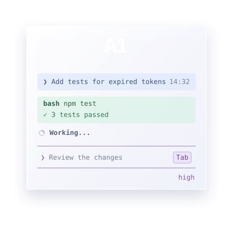

Your familiar Pi experience with everything you need
A1 is built on Pi, so Pi extensions work here too. Install from npm, Git, or a local path, and bring your existing tools and workflows with you.
A coding agent, multi-agent orchestrator, and terminal multiplexer—all in one open-source workspace.
Handle empty config files
Checking the loader and its tests
12 const source = await readFile(path, "utf8"); 13 return JSON.parse(source);
-13 return JSON.parse(source); +13 const text = source.trim(); +14 return text ? JSON.parse(text) : {};
$ npx vitest run test/config.test.ts
✓ test/config.test.ts (8 tests) Tests 8 passed
Took 1.2s
Empty files now return {}. All 8 config tests pass.
Illustrative session

A1 is built on Pi, so Pi extensions work here too. Install from npm, Git, or a local path, and bring your existing tools and workflows with you.

Keep the Pi foundation you know, with A1’s prompt history, next-step suggestions, and focused terminal controls. Less retyping, more building.

Run several agents side by side. Give each a focused task and keep your multi-agent workflow together in one terminal.
Install A1, then run a1 from your project directory.
npx -y @timurproko/a1-installRequires Node.js ≥22.19 and <25, npm, and model-provider access. Provider terms and usage costs apply.
A1—Agent Number One—is an open-source, terminal-native AI coding agent. It brings conversational coding, file tools, and command execution into your project, with configurable models and extensions.
No. A1 runs in your terminal. Keep your preferred editor, open a terminal in your project directory, and launch a1.
A1’s source code is available under the MIT license. Model access is separate: your selected provider’s account requirements, terms, and usage charges apply. Optional prompt suggestions make additional model requests.
Yes. Install Pi-compatible extensions from npm, Git, or a local path. For MCP, install the adapter and run /mcp setup inside A1. Extensions use A1’s own profile. See the extension instructions for commands and configuration.
A1 keeps its profile at ~/.a1/agent. Persistent prompt history is stored locally as unencrypted text and can be disabled in Settings. This does not mean model inference is local: requests go to your configured provider. Review the prompt-history documentation for storage and removal details.